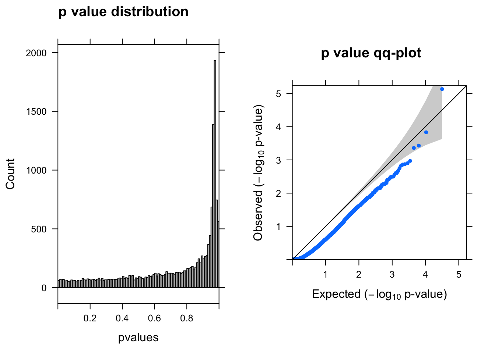
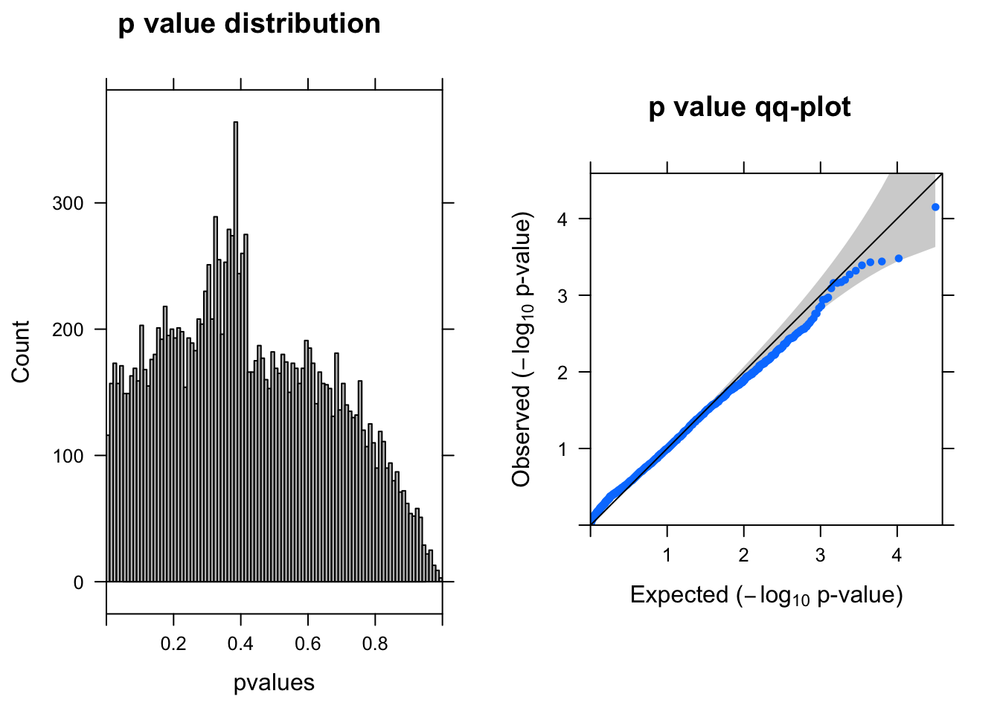
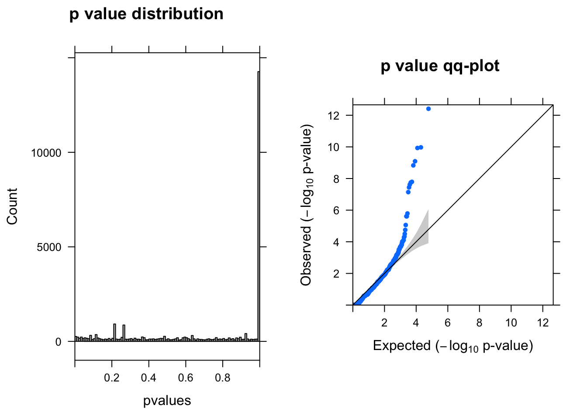
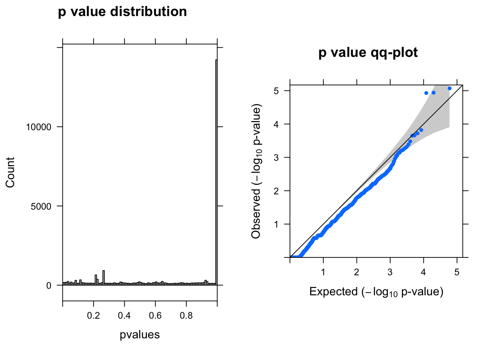
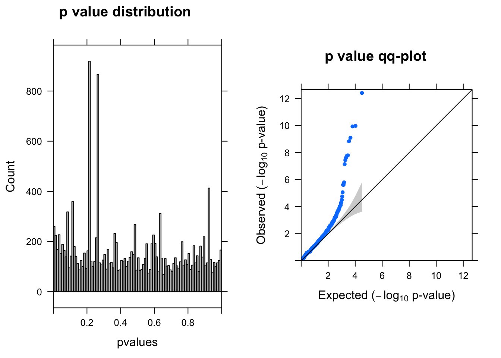
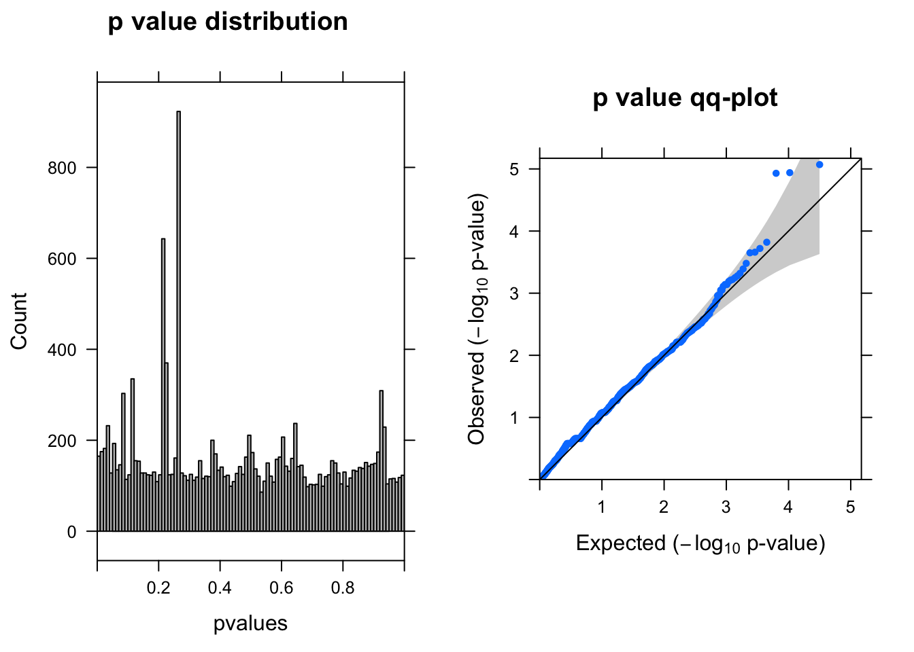

Last updated: 2018-12-05
workflowr checks: (Click a bullet for more information) ✖ R Markdown file: uncommitted changes
The R Markdown is untracked by Git. To know which version of the R Markdown file created these results, you’ll want to first commit it to the Git repo. If you’re still working on the analysis, you can ignore this warning. When you’re finished, you can run wflow_publish to commit the R Markdown file and build the HTML.
✔ Environment: empty
Great job! The global environment was empty. Objects defined in the global environment can affect the analysis in your R Markdown file in unknown ways. For reproduciblity it’s best to always run the code in an empty environment.
✔ Seed:
set.seed(20181119)
The command set.seed(20181119) was run prior to running the code in the R Markdown file. Setting a seed ensures that any results that rely on randomness, e.g. subsampling or permutations, are reproducible.
✔ Session information: recorded
Great job! Recording the operating system, R version, and package versions is critical for reproducibility.
✔ Repository version: 275d5d8
wflow_publish or wflow_git_commit). workflowr only checks the R Markdown file, but you know if there are other scripts or data files that it depends on. Below is the status of the Git repository when the results were generated:
Ignored files:
Ignored: .Rhistory
Ignored: .Rproj.user/
Ignored: analysis/Quality_metrics_cache/
Ignored: analysis/figure/
Untracked files:
Untracked: analysis/DE_analysis.Rmd
Untracked: code/qq-plot.R
Untracked: code/summary_functions.R
Untracked: docs/figure/DE_analysis.Rmd/
Unstaged changes:
Modified: analysis/Quality_metrics.Rmd
Modified: analysis/crop_workflow_Alan.Rmd
Modified: analysis/index.Rmd
Modified: data/DE_input.Rd
Load data
source("code/summary_functions.R")
load("data/DE_input.Rd")
glocus <- "VPS45"
dim(dm)[1]NULLgcount <- dm[1:(dim(dm)[1]-76), colnames(dm1dfagg)[dm1dfagg[glocus,] >0 & nlocus==1]]
# negative control cells defined as neg gRNA targeted cells
ncount <- dm[1:(dim(dm)[1]-76), colnames(dm1dfagg)[dm1dfagg["neg",] >0 & nlocus==1]]
coldata <- data.frame(row.names = c(colnames(gcount),colnames(ncount)),
condition=c(rep('G',dim(gcount)[2]),rep('N',dim(ncount)[2])))library(DESeq2)
dds = DESeqDataSetFromMatrix(countData = cbind(gcount,ncount),
colData = coldata,
design = ~condition)
dds = estimateSizeFactors(dds)
ddsWARD = DESeq(dds)
resWARD = results(ddsWARD)
summ_pvalues(resWARD$pvalue[!is.na(resWARD$pvalue)])
resSigWARD <- subset(resWARD, padj < 0.1)There are 0 genes passed FDR <0.1 cutoff.
Following recommendation for single cell from here.
ddsLRT = DESeq(dds, test="LRT", reduced = ~1, sfType="poscounts", useT=TRUE, minmu=1e-6,minReplicatesForReplace=Inf)
resLRT = results(ddsLRT)
summ_pvalues(resLRT$pvalue[!is.na(resLRT$pvalue)])
resSigLRT <- subset(resLRT, padj < 0.1)There are 0 genes passed FDR <0.1 cutoff.
library(edgeR)
y <- DGEList(counts= cbind(gcount,ncount),group=coldata$condition)
y <- calcNormFactors(y)
group=coldata$condition
design <- model.matrix(~group)
y <- estimateDisp(y,design)
fitqlf <- glmQLFit(y,design)
qlf <- glmQLFTest(fitqlf,coef=2)
summ_pvalues(qlf$table$PValue)
topTags(qlf)Coefficient: groupN
logFC logCPM F PValue FDR
ENSG00000176956.12 -2.776350 6.601479 58.72481 3.918884e-13 1.169630e-08
ENSG00000100097.11 -2.299929 6.624158 45.44607 1.064435e-10 1.171374e-06
ENSG00000130203.9 -1.831334 6.391155 45.21290 1.177418e-10 1.171374e-06
ENSG00000100300.17 -1.607537 6.410639 40.80264 8.073546e-10 6.024077e-06
ENSG00000138136.6 -1.976572 6.423656 39.44806 1.468212e-09 8.764051e-06
ENSG00000089116.3 -1.542926 6.320288 36.99506 1.605330e-08 7.578892e-05
ENSG00000175899.14 -1.584250 6.857262 33.87858 1.777533e-08 7.578892e-05
ENSG00000162992.3 -1.608906 6.373881 34.49478 2.385458e-08 8.899547e-05
ENSG00000198417.6 -1.600763 6.403261 32.30436 3.635396e-08 1.205578e-04
ENSG00000104327.7 -1.374926 6.326720 49.50835 7.206623e-08 2.150889e-04fitlrt <- glmFit(y,design)
lrt <- glmLRT(fitlrt,coef=2)
topTags(lrt)Coefficient: groupN
logFC logCPM LR PValue FDR
ENSG00000175899.14 -1.4640348 6.857262 19.83212 8.454987e-06 0.1170441
ENSG00000176956.12 -2.6064930 6.601479 19.25383 1.144407e-05 0.1170441
ENSG00000100097.11 -2.2150044 6.624158 19.20106 1.176480e-05 0.1170441
ENSG00000100300.17 -1.4959097 6.410639 14.35365 1.514859e-04 0.9651347
ENSG00000119906.11 1.0518706 6.444915 13.90103 1.926926e-04 0.9651347
ENSG00000185900.9 -0.7876253 6.269218 13.68055 2.166870e-04 0.9651347
ENSG00000219626.8 -0.9907215 6.458688 13.59855 2.263601e-04 0.9651347
ENSG00000078061.12 -0.8304381 6.581079 12.89330 3.297606e-04 1.0000000
ENSG00000234912.11 1.0422011 6.412729 12.49191 4.087177e-04 1.0000000
ENSG00000175806.14 -0.7904605 6.612756 12.19362 4.795325e-04 1.0000000summ_pvalues(lrt$table$PValue)
Filter genes with 0 coverage in all cells.
mycount <- cbind(gcount,ncount)
totalcount <- apply(mycount,1,sum)
y <- DGEList(counts= mycount[totalcount>0,],group=coldata$condition)
y <- calcNormFactors(y)
group=coldata$condition
design <- model.matrix(~group)
y <- estimateDisp(y,design)
fitqlf <- glmQLFit(y,design)
qlf <- glmQLFTest(fitqlf,coef=2)
topTags(qlf)Coefficient: groupN
logFC logCPM F PValue FDR
ENSG00000176956.12 -2.776350 6.601479 58.72481 3.918884e-13 6.170676e-09
ENSG00000100097.11 -2.299929 6.624158 45.44607 1.064435e-10 6.179874e-07
ENSG00000130203.9 -1.831334 6.391155 45.21290 1.177418e-10 6.179874e-07
ENSG00000100300.17 -1.607537 6.410639 40.80264 8.073546e-10 3.178152e-06
ENSG00000138136.6 -1.976572 6.423656 39.44806 1.468212e-09 4.623693e-06
ENSG00000089116.3 -1.542926 6.320288 36.99506 1.605330e-08 3.998433e-05
ENSG00000175899.14 -1.584250 6.857262 33.87858 1.777533e-08 3.998433e-05
ENSG00000162992.3 -1.608906 6.373881 34.49478 2.385458e-08 4.695177e-05
ENSG00000198417.6 -1.600763 6.403261 32.30436 3.635396e-08 6.360327e-05
ENSG00000104327.7 -1.374926 6.326720 49.50835 7.206623e-08 1.134755e-04summ_pvalues(qlf$table$PValue)
Filter genes with 0 coverage in all cells.
fitlrt <- glmFit(y,design)
lrt <- glmLRT(fitlrt,coef=2)
topTags(lrt)Coefficient: groupN
logFC logCPM LR PValue FDR
ENSG00000175899.14 -1.4640348 6.857262 19.83212 8.454987e-06 0.06174953
ENSG00000176956.12 -2.6064930 6.601479 19.25383 1.144407e-05 0.06174953
ENSG00000100097.11 -2.2150044 6.624158 19.20106 1.176480e-05 0.06174953
ENSG00000100300.17 -1.4959097 6.410639 14.35365 1.514859e-04 0.50918085
ENSG00000119906.11 1.0518706 6.444915 13.90103 1.926926e-04 0.50918085
ENSG00000185900.9 -0.7876253 6.269218 13.68055 2.166870e-04 0.50918085
ENSG00000219626.8 -0.9907215 6.458688 13.59855 2.263601e-04 0.50918085
ENSG00000078061.12 -0.8304381 6.581079 12.89330 3.297606e-04 0.64905134
ENSG00000234912.11 1.0422011 6.412729 12.49191 4.087177e-04 0.66841632
ENSG00000175806.14 -0.7904605 6.612756 12.19362 4.795325e-04 0.66841632summ_pvalues(lrt$table$PValue)
sessionInfo()R version 3.5.1 (2018-07-02)
Platform: x86_64-apple-darwin14.5.0 (64-bit)
Running under: OS X El Capitan 10.11.6
Matrix products: default
BLAS: /System/Library/Frameworks/Accelerate.framework/Versions/A/Frameworks/vecLib.framework/Versions/A/libBLAS.dylib
LAPACK: /System/Library/Frameworks/Accelerate.framework/Versions/A/Frameworks/vecLib.framework/Versions/A/libLAPACK.dylib
locale:
[1] en_US.UTF-8/en_US.UTF-8/en_US.UTF-8/C/en_US.UTF-8/en_US.UTF-8
attached base packages:
[1] grid parallel stats4 stats graphics grDevices utils
[8] datasets methods base
other attached packages:
[1] edgeR_3.22.5 limma_3.36.5
[3] gridExtra_2.3 lattice_0.20-35
[5] DESeq2_1.20.0 SummarizedExperiment_1.10.1
[7] DelayedArray_0.6.6 BiocParallel_1.14.2
[9] matrixStats_0.54.0 Biobase_2.40.0
[11] GenomicRanges_1.32.7 GenomeInfoDb_1.16.0
[13] IRanges_2.14.12 S4Vectors_0.18.3
[15] BiocGenerics_0.26.0 Matrix_1.2-14
loaded via a namespace (and not attached):
[1] bit64_0.9-7 splines_3.5.1 R.utils_2.7.0
[4] Formula_1.2-3 assertthat_0.2.0 latticeExtra_0.6-28
[7] blob_1.1.1 GenomeInfoDbData_1.1.0 yaml_2.2.0
[10] RSQLite_2.1.1 pillar_1.3.0 backports_1.1.2
[13] glue_1.3.0 digest_0.6.18 RColorBrewer_1.1-2
[16] XVector_0.20.0 checkmate_1.8.5 colorspace_1.3-2
[19] htmltools_0.3.6 R.oo_1.22.0 plyr_1.8.4
[22] XML_3.98-1.16 pkgconfig_2.0.2 genefilter_1.62.0
[25] zlibbioc_1.26.0 purrr_0.2.5 xtable_1.8-3
[28] scales_1.0.0 whisker_0.3-2 git2r_0.23.0
[31] tibble_1.4.2 htmlTable_1.12 annotate_1.58.0
[34] ggplot2_3.1.0 nnet_7.3-12 lazyeval_0.2.1
[37] survival_2.42-6 magrittr_1.5 crayon_1.3.4
[40] memoise_1.1.0 evaluate_0.12 R.methodsS3_1.7.1
[43] foreign_0.8-71 tools_3.5.1 data.table_1.11.6
[46] stringr_1.3.1 locfit_1.5-9.1 munsell_0.5.0
[49] cluster_2.0.7-1 AnnotationDbi_1.42.1 bindrcpp_0.2.2
[52] compiler_3.5.1 rlang_0.3.0.1 RCurl_1.95-4.11
[55] rstudioapi_0.8 htmlwidgets_1.2 bitops_1.0-6
[58] base64enc_0.1-3 rmarkdown_1.10 gtable_0.2.0
[61] DBI_1.0.0 R6_2.3.0 knitr_1.20
[64] dplyr_0.7.6 bit_1.1-12 bindr_0.1.1
[67] Hmisc_4.1-1 workflowr_1.1.1 rprojroot_1.3-2
[70] stringi_1.2.4 Rcpp_1.0.0 geneplotter_1.58.0
[73] rpart_4.1-13 acepack_1.4.1 tidyselect_0.2.4 This reproducible R Markdown analysis was created with workflowr 1.1.1